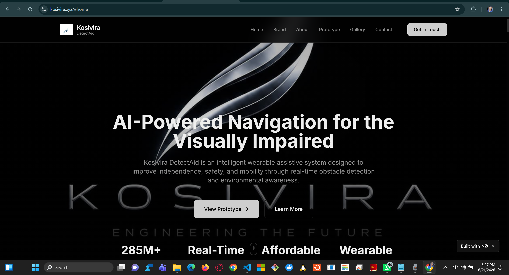
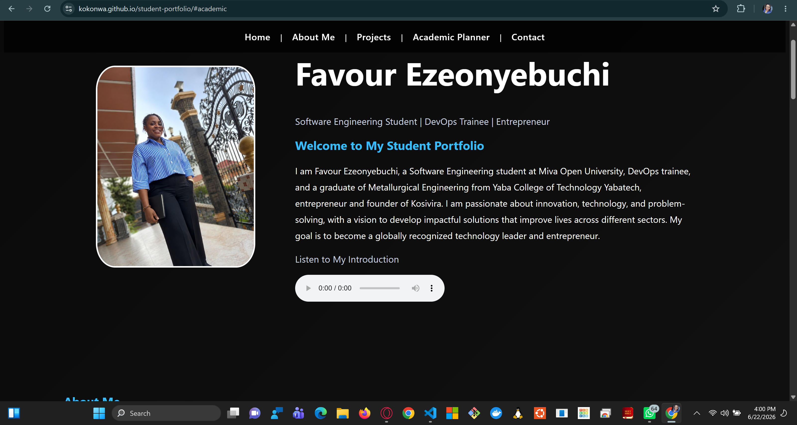
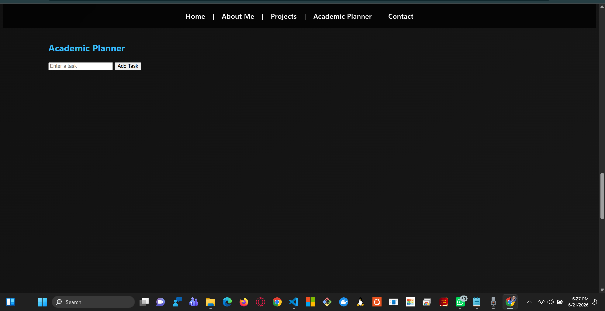

Passionate about DevOps, cloud technologies, software development and building impactful solutions. Founder of KOSIVIRA DetectAid, an AI-powered navigation system for visually impaired individuals. Dedicated to leveraging technology, innovative and engineering to solve real-problems and create meaningful impact.
Technical Certifications
Projects Built
Educational Programs
Startup Founded
Technologies and tools I use for DevOps, cloud computing, software development, and engineering projects.
A selection of projects that showcase my passion for innovation, software development, DevOps, and assistive technology.

AI-powered navigation and obstacle detection system designed to support visually impaired individuals. Built around accessibility, safety, independence, and intelligent guidance.
View Project
Responsive portfolio website developed with HTML, CSS and JavaScript to showcase projects, education, certifications and professional growth.
View Project
A web-based planner created to help students manage assignments, schedules, coursework and academic goals more efficiently.
View PlannerWatch a brief demonstration of KOSIVIRA DetectAid, an AI-powered navigation system designed to assist visually impaired individuals.
Founder and Product Visionary of KOSIVIRA DetectAid